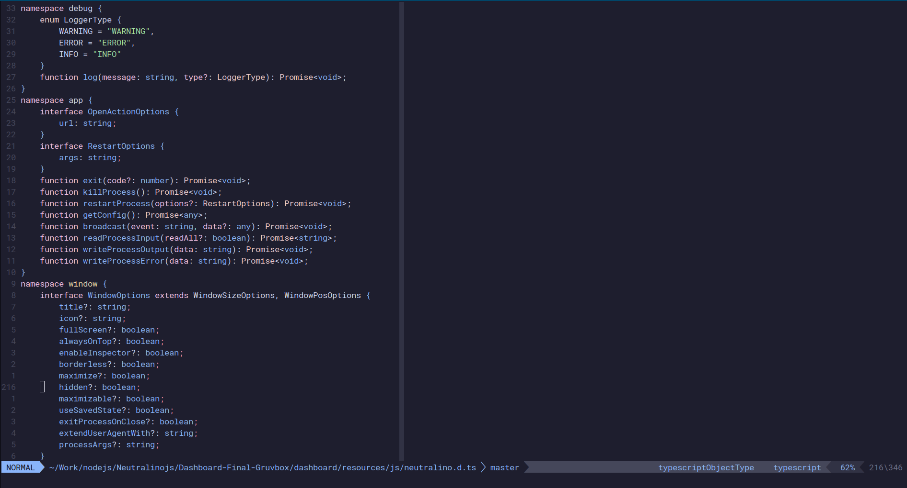
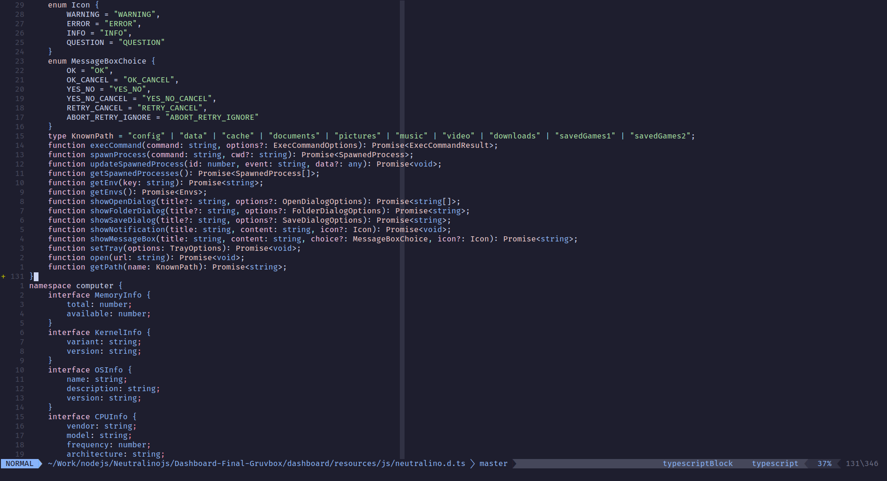
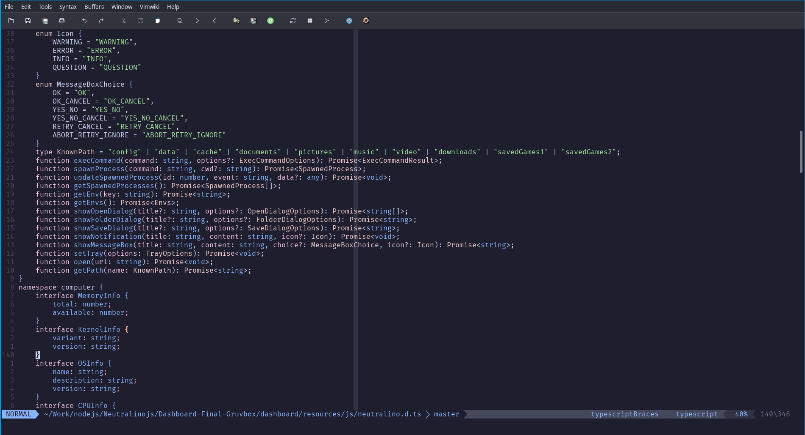
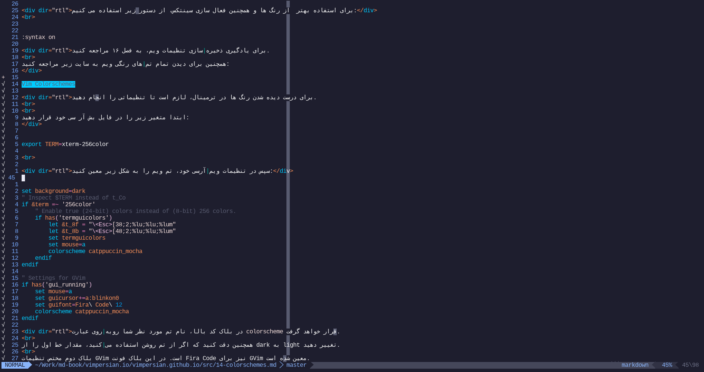
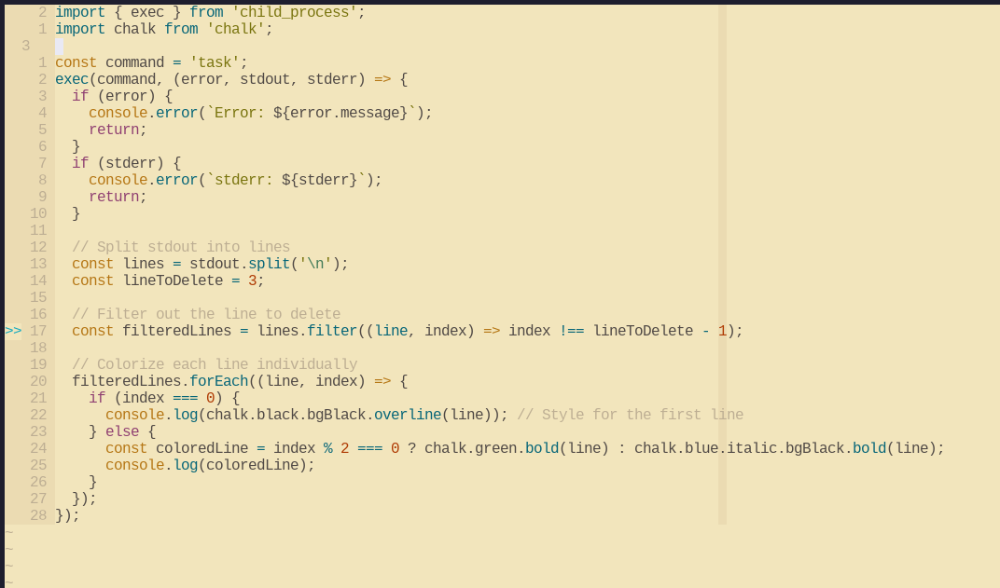

برای وارد کردن متن از مود وردی یا اینسرت مود استفاده میکنیم و برای انتخاب و ویرایشهای بزرگتر از مود ویژوآل، و برای اجرای دستورات خط فرمان ویم یا خط فرمان پوسته، از مود دستوری یا کامند مود استفاده میکنیم.
دانستن اینکه ویم فراتر از یک ادیتور است و درواقع یک زبان برای ویرایش متن و کد است در ابتدای کار حیاتی است.
در ویم هر کلید کیبورد در مود نرمال به یک کنش یا اکشن اختصاص دارد. مدل ویرایش در ویم این صورت است که ما مدام در بین مودهای مختلف در حال حرکت هستیم و این سرعتی باور نکردنی در پیمایش متن و ویرایش آن به ما میدهد.
ویم دارای گرامر بخصوصی است که آنرا میتوان به COM خلاصه کرد.
- count (شمارش)
- operation (عملیات)
- motion (جهت)
در ویم یا ویآی، ما میتوانیم با تنها یک کلید ، در متن حرکت کنیم. این حرکتها به کلمات، گروهی از حروف ، اعداد، تک حرف ، توکنها یا خط ها باشند. در منطق ویم، یک کلمه میتواند گروهی از حروف ، اعداد و سمبلها باشد. از طرفی دیگر یک توکن، هر آنچه که با فضای سفید، (اسپیس) جدا شده باشد تلقی میشود.
این راهنما باید بعد از انجام کامل vimtutor خوانده شود.
در ترمینال عبارت
vimtutor را وارد کنید و درسها را انجام دهید.
اگر با زبان انگلیسی آن راحت نیستید، این پلیلیست را در یوتوب ببینید.
vimtutor
بهعلاوهی درسهایی در باره نصب پلاگین و شخصی سازی ویم، قرار
گرفته است.اگرچه بیشتر اطلاعات داخل
vimtutor در این سایت پوشش داده
میشود، فرض بر آن است که مخاطب vimtutor را گذرانده است. مرحله اول یادگیری
ویم، همیشه و همهجا vimtutor است.h-- حرکت نشانگر به چپj-- حرکت نشانگر به پایینk-- حرکت نشانگر به بالاl-- حرکت نشانگر به راست
-
5jپنج خط به پایین میرود -
b-- حرکت به اول یک کلمه -
B-- حرکت به اول یک توکن -
w-- حرکت به اول کلمهی بعد -
W-- حرکت به اول توکن بعد -
e-- حرکت به آخر کلمه -
E-- حرکت به آخر توکن
برای پرش به پرانتز بسته، گیومه بسته و غیره از % استفاده کنید
:h matchpairs
0 \ zero-- حرکت به اول خط فعلی$ \ dollar sign-- حرکت به آخر خط فعلی^ \ caret sign-- حرکت به اولین کاراکتر موجود در خط#G/#gg/:#حرکت به شماره خط مشخص، (شماره خط جایگزین هشتگ شود)
:set number
حرکت به وسیله صفحه
دستورهای زیر برای اسکرول کردن سریع در فایل کاربرد دارند.Ctrl + b-- یک صفحه کامل به عقب رفتنCtrl + f-- یک صفحه کامل به جلو رفتنCtrl + d-- نصف صفحه جلو رفتنCtrl + u-- نصف صفحه عقب رفتنCtrl + e-- صفحه را بدون حرکت دادن نشانگر یک خط پایینتر بردنCtrl + y-- صفحه را بدون حرکت دادن نشانگر یک خط بالاتر بردنCtrl + o-- به عقب رفتن در تاریخچهی پرش ها. برای حرکت بین فایلها و بافرها هم کاربرد دارCtrl + i-- برعکس دستور بالا
H-- حرکت به بالای صفحهM-- حرکت به وسط صفحهL-- حرکت به پایین صفحه
i-- وارد شدن به حالت ورود متنI-- وارد کردن متن در اول خطa-- سوییچ کردن به حالت ورود متن بعد از نشانگرA-- وارد کردن متن در آخر خطo-- باز کردن یک خط جدید زیر خط فعلیO-- باز کردن خط جدید بالای خط فعلیea-- وارد کردن متن در آخر کلمهEsc-- خارج شدن از حالت ورود متن و برگشنن به حالت نرمال
r-- جایگزین کردن یک کاراکتر و بازگشت به حالت نرمالcc-- جایگزین کردن کل خط (خط را پاک میکند و به خالت ورود متن میرود)C/c$-- جایگزین کردن متن از مکان نشانگر تا آخر خطcw-- جایگزین کردن تا آخر کلمهs-- جایگزین کردن یک کاراکتر و رفتن به حالت ورود متنJ-- ادغام خط فعلی و خط زیر آن با یک اسپیس فاصلهgJ-- ادغام خط فعلی با خط زیر آن بدون اسپیسu-- undoCtrl+r-- redo.-- تکرار آخرین دستور
yy-- کپی کردن کامل خط فعلی#yy-- کپی کردن تعداد مشخصی از خطوطdd-- کات کردن کل خط#dd-- کات کردن تعداد مشخصی از خطوطp-- جایگذاری بعد از نشانگرP-- جایگذاری قبل از نشانگر
ایندنت
برای ایندنت کردن در حالت نرمال از کلید های زیر استفاده می کنیم:>><<
Ctrl+tCtrl+d
حالت ویژوال
به غیر از حالت ورود متن (insert mode) و حالت نرمال (normal mode) و حالت دستوری (command mode)، حالت دیگری نیز به نام حالت ویژوال (visual mode) وجود دارد. از این مود برای انتخاب و ویرایش و انجام عملیاتهای مختلف بر روی بخشهای بزرگتری از متن استفاده میشود
ویژوال مود سه حالت کلی دارد.
- حالت کاراکتری
- حالت خطی
- حالت بلاک
character mode, line mode, and block mode
v-- انتخاب متن در حالت کاراکتریV-- انتخاب متن در حالت خطیCtrl+v-- انتخاب متن در حالت بلاک
پس از فعالسازی یکی از حالتها، با استفاده از کلیدهای جهت متن را انتخاب کنید.
o-- حرکت از ابتدای متن انتخاب شده به آخر آنaw-- انتخاب یک کلمهab-- انتخاب یک بلاک کد که در بین پرانتز استaB-- انتخاب یک بلاک کد که در بین آکولاد است {}at-- انتخاب یک بلاک کد که در بین تگ است <>ib-- انتخاب قسمت داخلی یک بلاک کد که بین پرانتز استiB- انتخاب قسمت داخلی یک بلاک کد که بین آکولاد است {}it-- انتخاب قسمت داخلی یک بلاک کد که بین یک تگ است <>
y-- کپیd-- کاتp-- جایگذازی
* \ asterisk-- رفتن به وقوع بعدی از کلمهی زیر نشانگر# \ pound sign-- رفتن به وقوع قبلی از کلمهی زیر نشانگر/pattern--جستجوی یک الگوی مشخص در فایل?pattern-- جستجوی یک الگوی مشخص از مکان فعلی تا اول متنn-- پرش به وقوع بعدی الگوی یافت شدهN-- پرش به وقوع قبلی الگوی یافت شده
:w-- ذخیره کردن:wq/:x/ZZ-- ذخیر کردن و خروج از ویم:q-- خروج:q!/ZQ-- خروج بدون ذخیره کردن تغییرات:w new_file_name-- ذخیره کردن تحت نامی جدید و ادامه دادن به ویرایش فایل اصلی:sav-- ذخیره کردن تحت نامی جدید و ادامه دادن به ویرایش فایل کپی شده:w !sudo tee %-- ذخیره کردن فایل بهوسیلهی سودو و تی، مناسب وقتی که فایلی را بدون دسترسی سودو باز کردهایم tee
:e file_name-- باز کردن فایل در یک بافر جدید:bn-- رقتن به بافر بعدی:bp-- بازگشت به بافر قبلی:bd-- بستن بافر:b#-- رفتن به بافر با عدد شناسایی مشخص:b file_name-- رفتن به بافر با نام مشخص:ls-- لیست کردن تمام بافر باز ( شناسهی عددی هر بافر کنار نام آن ظاهر خواهد شد)
-
:sp file_name-- باز کردن یک فایل در یک اسپلیت افقی -
:vs file_name--باز کردن یک فایل در یک اسپلیت عمودی -
:vert ba-- باز کردن همهی بافر های فعلی در اسپلیتهای عمودی -
:tab ba-- ویرایش تمام بافرها بهوسیله تب -
gt-- رفتن به تب بعدی -
gT-- رفتن به تب قبلی -
Ctrl+ws-- اسپلیت کردن صفحه به صورت افقی -
Ctrl+wv-- اسپلیت کردن صفحه به صورت عمودی -
Ctrl+ww-- سوییچ کردن بین اسپلیت ها (مشابه alt + tab) -
Ctrl+wq-- بستن اسپلیت ها -
Ctrl+wx-- جابجا کردن اسپلیت ها با یگدیگر -
Ctrl+=-- برابر کردن طول و عرض تمام اسپلیتها
m[a-z]-- مارک کردن موقعیت فعلی بهوسیلهی حروف الفباM[a-z]-- مارک کردن خط فعلی بهوسیلهی خطوط الفبا`a- پرش به موقعیتی که با حرف آ مارک شدهa`.-- پرش به آخرین تغییر در فایل`0-- پرش به آخرین موقعیت فایل قبل از بسته شدن ویم``-- پرش به آخرین پرش:marks-- لیست کردن همهی مارک ها:jumps-- لیست کردن همهی پرش ها:changesلیست کردن همهی تغییراتCtrl+o-- رفتن به پرش قبلیCtrl+i-- رفتن به پرش بعدیg;-- رفتن به تغییر قبلی در لیست تغییراتg,-- رفتن به نغییر بعدی در لیست تغییرات
qa-- ضبط کردن یک ماکروaq-- توقف ضبط یک ماکرو@a-- اجرا کردن ماکروa@@-- اجرای دوبارهی ماکرو
aaa
bbb
ccc
ddd
Ax<ESC>j
با در نظر گرفتن کلید ضبط و پایان ضبط ماکرو
qAx<ESC>jq
10@a
ماکروی ضبط شده در رجیستر را به تعداد ده بار اجرا میکند
:colorscheme [colorscheme_name]-- تغییر تم رنگی:colorscheme [space]+Ctrl+d-- لیست کردن تمام تم های رنگی موجود
- retrobox
- lunaperche
- elflord
- slate
:set background=dark
:set background=light
:syntax on
همچنین برای دیدن تمام تمهای رنگی ویم به سایت زیر مراجعه کنید:
ابتدا متغیر زیر را در فایل بش آر سی خود قرار دهید:
export TERM=xterm-256color
set background=dark
" Inspect $TERM instead of t_Co
if &term =~ '256color'
" Enable true (24-bit) colors instead of (8-bit) 256 colors.
if has('termguicolors')
let &t_8f = "\<Esc>[38;2;%lu;%lu;%lum"
let &t_8b = "\<Esc>[48;2;%lu;%lu;%lum"
set termguicolors
set mouse=a
colorscheme catppuccin_mocha
endif
endif
" Settings for GVim
if has('gui_running')
set mouse=a
set guicursor+=a:blinkon0
set guifont=Fira\ Code\ 12
colorscheme catppuccin_mocha
endif
colorscheme قرار خواهد گرفت.
همچنین دقت کنید که اگر از تم روشن استفاده میکنید، مقدار خط اول را از dark به light تغییر دهید.
بلاک دوم مختص تنظیمات GVim است. در این بلاک فونت Fira Code نیز برای GVim معین شده است.




🔗 Mitra


XTerm*faceName: RobotoMonoNerdFont
XTerm*faceSize: 13
xterm*faceSize1: 10
xterm*faceSize2: 11
xterm*faceSize3: 14
xterm*faceSize4: 16
xterm*faceSize5: 18
xterm*faceSize6: 20
xterm*faceSize7: 22
xterm*faceSize8: 24
xterm*faceSize9: 26
set guifont=Fira\ Code\ 12
دستورات جایگزینی متن
یکی از قابلیتهای قدرتمند ویم، دارا بودن یک نوع فرمان SED داخلی است. این فرمان که در ویم معمولاً substitute خوانده میشود، ابزار بسیار پیشرفتهای برای یافتن و ویرایش متن به وسیلهی الگوهای رجکس است. با استفاده از این دستور، کاربر ویم میتواند ویرایشهای عظیم و پیچیدهای را روی فایلها اعمال کند. عملیاتهای طولانی و طاقت فرسای اصلاح متنی طولانی با استفاده صحیح از این دستور به آسانی صحبت کردن با بهترین دوستتان میشوند.برای مثال, یک فایل html با محتوای زیر داریم.
Quote of the day
Shopenhauer
"The majority of men... are not capable of thinking, but only of believing, and... are not accessible to reason, but only to authority."
(Arthur Shopenhauer)
برای حل این مشکل از یک دستور جایگزینی ساده استفاده میکنیم.
:%s/Shopenhauer/Schopenhauer/g
- % همیشه اشاره به فایل فعلی در ویم دارد، اینجا یعنی در این فایل بگرد
- s شروع دستور جستجو و جایگزینی همیشه با این حرف است. به معنی substitute
- /الگوی هدف/
- /الگوی مقصد/
- g انجام عملیات برای تمامی مچها
:s/search/replace/flags
cتایید کردن هر جایگزینی بصورت دستیeساکت کردن ارورها در صورتی که الگو پیدا نشودiنادیده گیری حروف بزرگ و کوچک ignorecaseIحساسیت به حروف بزرگ و کوچکgانجام جایگزینی در تمام مچها، در غیر این صورت جایگزینی پس از اولین مچ متوقف میشودnنمایش تعداد مچها و عدم جایگزینی
| Option | Description |
|---|---|
-o | باز کردن تعدادی فایل در اسپلیت های افقی |
-O | باز کردن تعدادی فایل در اسپلیت های افقی عمودی |
-p | باز کردن تعدادی فایل در تب های مجزا درون ویم |
+/{pat} | تعیین جایگاه نشانگر براساس اولین وقوع رجکس |
-u {vimrc} | خواندن فایل پیکره بندی غیر از فایل پیش فرض |
--clean | باز کردن ویم بدون تنظیمات شخصی - بدون ویم آرسی |
--version | چاپ اطلاعات مربوط به ورژن و ویژگی ها |
| Option | Description |
|---|---|
vim | باز کردن ویم و یک بافر خالی در حالت نرمال |
vim filename | باز کردن ویم با یک فایل مشخص |
vim - | stdin خواندن متن از ورودی استاندارد |
-n or --normal | باز کردن ویم در حالت نرمال، پیشفرض |
-i or --insert | باز کردن ویم در مود اینسرت |
-R or --readonly | باز کردن فایل در حالت غیرقابل ویرایش |
-N or --noplugin | باز کردن ویم بدون لود کردن هیچ پلاگینی |
+[num] | تعیین جایگاه نشانگر براساس شماره خط |
+{command} or -c {command} | اجرای یک دستور پس از بازکردن فایل |
-S {file} | سورس کردن یک فایل ویم اسکریپت |
-g or --gui | باز کردن جی ویم یا همان ویم در پنجره گرافیکی |
-A | باز کردن ویم در حالت عربی، راست به چپ آینه شده، درصورتی که با گزینه مربوط کامپایل شده باشد |
-b | حالت ویرایش فایلهای باینری |
-C | vi حالت هماهنگی با ادیتور |
-d | diff باز کردن ویم در حالت دیف , برای مقایسه فایلها |
-E | باز کردن ویم در مود ارتقا یافته ی اکس |
-F | باز کردن ویم با تنظیمات فارسی، این گزینه دیگر وجود ندارد |
-h | نمایش پیام کمکی |
-m | غیر فعال کردن امکان ایجاد تغییر |
-N | vi خاموش کردن تطابق با |
-R | read only حالت |
-r | لیست کردن فایل های سواپ ویم جهت ریکاوری |
-x | فعال سازی رمزگذاری فایل |
-y | باز کردن ویم در حالت ایزی-ویم / در این حالت ویم نت پد ویندوز را شبیه سازی می کند |
-Z | باز کردن ویم در حالت محدود، جلوگیری از اجرای دستورات پوسته و غیره |
-- | اعلام پایان آرگومان های ویم، پس از این تمام آرگومان ها به عنوان نام فایل خوانده می شوند |
کارکردن با نوشتار پارسی در ویم
طبیعتا شما میتوانید با تغییر زبان کیبورد خود به هر زبانی که میخواهید در ویم تایپ کنید، اما قابلیت استفاده از دستورات ویم را از دست میدهید و برای مثال چنانچه از اینسرت مود خارج شوید دیگر با زدن کلید i به آن باز نمیگردید.
راه حل این مسئله استفاده از کیبورد فارسی داخلی ویم است.
دستور زیر را در مود خط فرمان ویم وارد کنید:
:echo $VIMRUNTIME
/usr/share/vim/vim90/
cd /usr/share/vim/vim90
ls پوشهها و فایلهای موجود را بررسی کنید.
باید یک پوشه به نام keymaps ببینید.
با دستور زیر از وجود فایل کیبورد فارسی برای ویم اطمینان حاصل کنید:
find keymaps -type f -name '*persian*'
find /usr/share/vim/vim90 -type f -name '*persian*'
:set keymap=persian
برای تغییر کیبورد به انگلیسی از دستور زیر استفاده میکنیم:
:set keymap=
inoremap <C-f> <C-o>:set keymap=persian<cr>
inoremap <C-e> <C-o>:set keymap= <cr>
inoremap <leader>f <C-o>:set keymap=persian<cr>
inoremap <leader>e <C-o>:set keymap= <cr>
\ است.
اکثر کاربران این کلید لیدر را به اسپیس تغییر میدهتد.
let mapleader =" "
نکاتی درمورد ترمینال
اگر بهصورت مداوم با متون پارسی سروکار دارید، حتما از یک ترمینال مناسب استفاده کنید. ترمینالهای VTE و ترمینالهای شناخنه شده، ساپورت مناسبی برای نوشتار راست به چپ دارند. لیستی از ترمینالهای خوب در پایین آورده شده است.- Xterm
- Xfce4-terminal
- Konsole
- Roxterm
- Blackbox
- Gnome-terminal
- Terminator
- Lxterminal
- Qterminal
- Sakura
فونتهای مناسب برای هر دو نوشتار پارسی و انگلیسی
فونتهای زیر عملکرد مناسبی در هردو نوشتار راست به چپ و چپ به راست دارند. در اکثر مواقع فونت پیشفرض monospace سیستم برای بیشتر سناریو ها مناسب است. با استفاده از دستور زیر میتوانید ببینید که فونت پیشفرض مونو سیستم شما کدام فونت است.fc-match monospace
خروجی این دستور در سیستم نگارنده به شکل زیر است:
NotoSansMono-Regular.ttf
پکیج noto-fonts در اکثر سیستمها بصورت پیشفرض نصب است. چنانچه این پکیج را نصب ندارید یا سیستم شما به فونت دیگری برای مونو فالبک میکند (برای مثال فونت روبوتو)، میتوانید فونت مونو سیستمی را تغییر دهید. برای این کار به دستورالعمل توزیع خود مراجعه کنید.
برای مواردی که در tty نیاز به فونت مناسب فارسی دارید، فونت terminus ساپورت مناسبی از گلیفهای فارسی دارد.
call matchadd('Conceal', '\%u200c', 10, -1, {'conceal':'|'})
set conceallevel=2 concealcursor=nv
ذخیرهسازی تنظیمات در فایل ویمآرسی
برای ذخیرهسازی تنظیمات ویم از فایل ویمآرسی استفاده میکنیم. این فایل بصورت پیشفرض وجود ندارد مگر آنکه توزیع شما یا خودتان آنرا ساخته باشید. در این فایل میتوانیم تمامی تنظیمات داخلی ویمو تنظیمات پلاگینها را تغییر دهیم، ویماسکریپتهای خودمان را اضافه کنیم و ویم را کاملا از آن خود کنیم.
در ابتدا آپشنهای مورد نظر خود را set میکنیم. تعدادی از این آپشنها ضروری و تعداد زیادی از آنها کاملا سلیقهای هستند.
vim ~/.vimrc
| option | Description |
|---|---|
| set shiftwidth=4 | تعداد فاصله در هر سطح از ایندت |
| set tabstop=4 | تغداد فاصله در هر تب |
| set noswapfile | خاموش کردن فایل های سواپ که برای بازیابی اطلاعات استفاده می شوند |
| set autoindent | ایندنت خودکار |
| set ignorecase | عدم توجه به بزرگی و کوچکی حروف هنگام جستجو |
| set incsearch | هایلاییت الگوی جستجو همزمان با تایپ آن |
| set smartcase | عملکرد هوشمند در رابطه با حروف بزرگ و کوچک |
| set relativenumber | شماره گذاری خطوط به صورت نسبی / به نسبت خط زیر نشانگر |
| set number | شماره گذاری عادی |
| set hlsearch | هایلایت کردن الگوی جستجو |
| set autowriteall | ذخیره ی فایل به صورت خودکار |
| set laststatus=2 | نمایش نوار اطلاعات |
| set noshowmode | عدم نمایش تغییر مودها |
| set autochdir | تغییر خودکار مسیر پوسته به مکان فایل باز شده در ویم |
:h options
syntax on
filetype plugin indent on
syntax on
filetype plugin indent on
set shiftwidth=4
set tabstop=4
set noswapfile
set autoindent
set ignorecase
set incsearch
set smartcase
set relativenumber
set number
set hlsearch
set autowriteall
set laststatus=2
نصب پلاگین با استفاده از ویمپلاگ
ویم از نسخه ۸ به بعد دارای سیستم مدیریت پلاگین است، اما این روش خیلی مناسب کاربران تازه کار نیست.
در روش داخلی ویم، پلاگینها باید در ساختار مشخصی از پوشهها و به ترتیب خاصی قرار بگیرند و وظیفه آپدیت نگهداشتن آنها نیز با خود کاربر است. پلاگینها بصورت مخازن گیت کلون شده و به کلی با استفاده از دستورات گیت مدیریت میشوند.
این روش برای کسانی که چند پلاگین کوچک نیاز دارند روش مناسب و قابل مدیریتی است. اما برای کسانی که میخواهند با راحتی بیشتری پلاگینها را نصب، غیرفعال، آپدیت یا پاک کنند، ویمپلاگ گزینهی بسیار بهتری است.
شایان ذکر است که ویم دارای هیچگونه پلاگین یا قابلیتی برای سرچ کردن پلاگینها از داخل خود ویم نیست و هیچ برنامهای جهت ساخت اینچنین چیزی وجود ندارد.
برای نصب ویمپلاگ، به مخزن آن در گیتهاب رفته و دستور curl مربوط به سیستم خود را انتخاب میکنیم.
برای نصب ویم پلاگ در سیستمهای یونیکس و لینوکس، دستور کرل زیر را اجرا میکنیم:
curl -fLo ~/.vim/autoload/plug.vim --create-dirs \
https://raw.githubusercontent.com/junegunn/vim-plug/master/plug.vim
پس از اجرای دستور بالا، کافیست که آدرس پلاگینهای خود را بین دو عبارت
call plug#begin()
call plug#end()
آدرس پلاگینها میتوانند آدرس http مخزن گیت یا آدرس کوتاه شده باشند. تقریبا همهی پلاگینهای ویم از ویمپلاگ پشتیبانی میکنند. اکثر پلاگینها در دستورات نصب خود آدرس کوتاه شدهی پلاگین را برای استفاده با ویمپلاگ قرار دادهاند.
برای مثال چند پلاگین مفید و کاربردی نصب میکنیم.
call plug#begin()
Plug 'SirVer/ultisnips'
Plug 'honza/vim-snippets'
Plug 'https://github.com/wolandark/browser-sync.git', { 'do': 'npm install browser-sync' }
call plug#end()
سینتکس دستورات سادهی ویمپلاگ به شکل زیر است.
Plug 'address in single quotes'
<\code>
ویمپلاگ قابلیتهای زیادی دارد که بهتر است برای یادگیری آنها به گیتهاب پروژه مراجعه کنید.
دستورات ضروری ویمپلاگ اینجا مطرح خواهند شد.
:w
:source %
(یا خارج و وارد میشویم)
| Command | Descriptionb |
|---|---|
| :PlugInstall | نصب پلاگینها |
| :PlugUpdate | آپدیت پلاگینها |
| :PlugUpgrade | آپگرید ویمپلاگ |
| :PlugClean | پاک کردن پلاگینها |
چند پلاگین مفید برای ویم
لیستی از پلاگینهای مفید و کارآمد در زیر آورده شده است. بر اساس نیاز خود و با در نظرگیری کارکرد و تطابق پلاگینها با همدیگر از بین آنها انتخاب کنید. لیست کاملتری از پلاگینهای ویم در سایت vimawesome قرار دارد.-
vim-surround
پلاگینی برای محاصره کردن توکن ها با الگو های دیگر
Plug 'tpope/vim-surround' -
coc.nvim
اکستنشن Nodejs برای ویم - لود کردن اکستنشن مانند وی اس کد
curl -sL install-node.vercel.app/lts | bash
Plug 'neoclide/coc.nvim', {'branch': 'release'} -
vim-css-color
هایلات کردن رنگهای CSS در ویم
Plug 'ap/vim-css-color' -
lightline.vim
استاتوس لاین زیبا و کارآمد
Plug 'itchyny/lightline.vim' -
fzf.vim
فازی فایندر
Plug 'junegunn/fzf', { 'do': { -> fzf#install() } }
Plug 'junegunn/fzf.vim' -
vim-repeat
تکرار همهچیز به آسانی
Plug 'tpope/vim-repeat' -
tagbar
پلاگین مرور کردن تگها
Plug 'majutsushi/tagbar' -
ale
پلاگین LSP برای ویم
Plug 'w0rp/ale' -
tabular
منظمسازی متن بر اساس الگو یا کاراکتر، مناسب جدول و غیره ...
Plug 'godlygeek/tabular' -
ultisnips
موتور مدیریت اسنیپتها برای ویم
Plug 'sirver/ultisnips' -
vim-snippets
اسنیپتهای ه هونزا برای استفاده با ultisnips
Plug 'honza/vim-snippets' -
sparkup
خلاصهنویسی HTML مانند Emmet
Plug 'rstacruz/sparkup' -
base16-vim
صدها تم رنگی باکیفیت بر اساس پالت بیس۱۶
Plug 'chriskempson/base16-vim' -
ctrlp.vim
یک فازی فایندر دیگر برای ویم
Plug 'https://github.com/ctrlpvim/ctrlp.vim.git' -
ag.vim
ابزار فوقالعادهی ag برای ویم
Plug 'rking/ag.vim' -
پکیج زبان برای ویم
Plug 'sheerun/vim-polyglot' -
vim-eunuch
دستورات پوسته با راحتی بیشتر از داخل ویم
Plug 'tpope/vim-eunuch' -
vim-visual-multi
چندین نشانگر برای ویم مشابه سابلایم
Plug 'mg979/vim-visual-multi', {'branch': 'master'} -
vim-startify
داشبرد شروع کار برای ویم
Plug 'mhinz/vim-startify' -
goyo.vim
وسطچین کردن متن در ویم و نگارش بدون حواسپرتی
Plug 'junegunn/goyo.vim'
set spell spelllang=en_us
set wildmode=longest,list,full
hi SpellBad ctermfg=red guifg=red
]s[s
z=
=zما را وارد منوی انتخاب واژه با املای درست میکند. معمولا اولین پیشنهاد درستترین پیشنهاد است. سپس با زدن کلید 1 اولین پیشنهاد را انتخاب میکنیم و واژه جایگزین میشود.
چنانچه انتخاب دوم، سوم الی آخر درست بودند، عدد مربوط به آن را وارد میکنیم.
z=1 سریعترین راه اصلاح املای واژگان است.
noremap <F6> :setlocal spell! spelllang=en_us<CR>
F6 حالت بررسی غلطهای املایی را فعال میکند. اگر بخواهید که F6 در حالت اینسرت هم این کار را انجام دهد باید یک مپینگ جدا برای آن تعریف کنید. keybinding ها در ویم، اختصاصا برای مدهای مختلف تعریف میشوند.nnoremap <F6> :setlocal spell! spelllang=en_us<CR>
inoremap <F6> <C-o>:setlocal spell! spelllang=en_us<CR>
z=1 را تسریع دهیم.function! FixSpell()
normal! 1z=<CR>
endfunction
map gs :call FixSpell()<CR>
gsروی واژگان قرمز شده، میتوانیم اولین پیشنهاد اصلاح را اعمال کنیم.۲۱ بهمن ۱۴۰۲
Sha Bah 21 18:24:03 +0330 1402
Contact me
Chapters to write
-
vim plugins - default and vimplug way
- vimplug covered - pack/start briefly covered
- list of useful plugins
- spell check
- custom mappings
- NETRW
- Compiling Vim
- tcl (maybe)